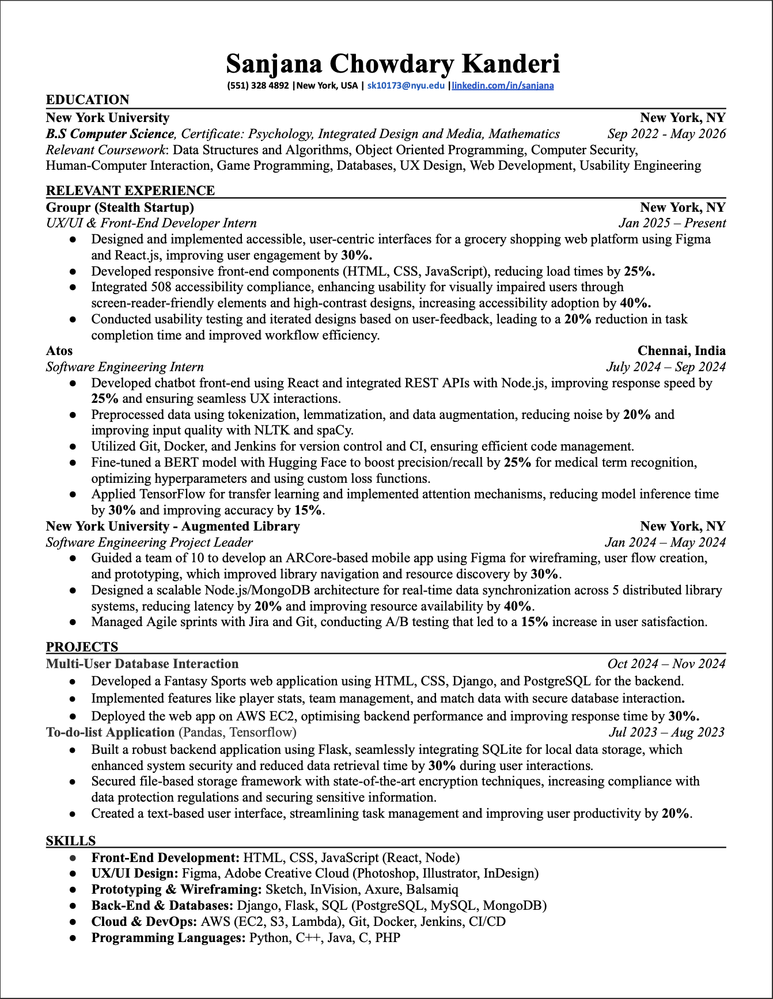

Contact Me


Creative Developer | Designer
I'm a junior studying Computer Science at NYU, focusing on UI/UX design and software development.
🌱 Currently diving deeper into user experience design, front-end development, and building intuitive interfaces.
💻 Technologies I love working with include Python, Java, HTML/CSS, React, and SQL.
💡 Passionate about design, algorithmic problem-solving, and creating products that bring joy to users.
💞️ Open to collaborating on UI/UX projects, front-end development, or anything creative that involves user-centered design.
🌿 Love growing plants, and my heart sinks a little if they don’t make it 😢.
🌅 Absolutely adore going on sunset walks—it’s my favorite way to unwind after a busy day.
🎨 In my free time, I enjoy exploring the world of UI/UX design, experimenting with new layouts, and creating engaging digital experiences.
📫 Feel free to reach out to me on GitHub or via LinkedIn if you'd like to collaborate or chat about design!
Click to preview or download my resume.
 Download ResumeLately, I’ve been thinking a lot about how my brain works—how I remember things, make decisions, and even why I sometimes forget what I was just about to do. It’s something we rarely stop to consider, but cognition plays such a huge role in our daily lives.
One of the most interesting things I’ve noticed is how unpredictable my memory can be. There are times when I can recall the most random details from years ago—like the smell of my grandmother’s kitchen or the exact words of a childhood song. And yet, I’ll walk into a room and completely forget why I’m there. It turns out, this isn’t just me being forgetful—it’s actually a cognitive phenomenon called the doorway effect, where our brains “reset” when we change environments. Realizing this made me feel a little less frustrated about those moments.
Another thing I’ve become more aware of is how my brain makes decisions. I always thought I was a logical person, but the more I learn about cognition, the more I realize how much emotions influence my choices. Even when I try to be rational, my brain is constantly filtering information in ways I don’t even notice. For example, I recently caught myself scrolling through product reviews, only paying attention to the ones that confirmed what I already wanted to believe. That’s confirmation bias in action!
One of the coolest things about cognition is that our brains are built to adapt and learn. Even as an adult, I love picking up new skills—whether it’s a hobby, a language, or just random facts. The concept of neuroplasticity, or the brain’s ability to change and grow, is proof that we’re never too old to learn something new.
Understanding how my mind works has been eye-opening. It’s helped me be more patient with myself when I forget things, more mindful of how I make decisions, and more excited about learning new things. At the end of the day, cognition isn’t just an academic concept—it’s the invisible force shaping our everyday experiences, and that’s pretty amazing.